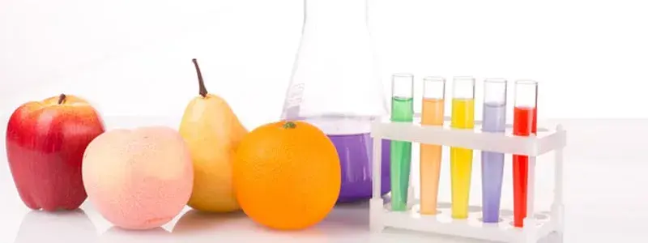

Cursos dictados por nuestra academia
Interesados por los cursos
Cursos y talleres acorde a las exigencias normativas vigentes y a las necesidades de nuestros clientes.
Gestion de la calidad
- Buenas prácticas de manufactura
- Análisis de peligros y puntos críticos de control (HACCP)
- Regulación sanitaria de los alimentos.
- Control de producto no conforme.
- Interpretación de las normas de gestión.
- Formación de auditores internos.
- Control de plagas.
Seguridad y salud
- Consumo responsable de los recursos.
- Ergonomía y manipulación de cargas.
- Investigación de accidentes.
- Peligros y riesgos en el trabajo.
- Manipulación manual de cargas.
- Análisis de trabajo seguro.
Gestion de procesos
- Indicadores de calidad.
- Orden y limpieza 5S.
- Manipulación adecuada de los residuos.
- Seguimiento y medición de indicadores.
- Control estadísticos de procesos.
- Gestión de acciones correctivas y preventivas.
Asuntos regulatorios
- Adecuación de ley saludable.
- Diseño de tablas nutricionales
- Leyes de impacto en la organización.
- Fichas Técnicas.
- Registros Sanitarios Nacional e Internacional